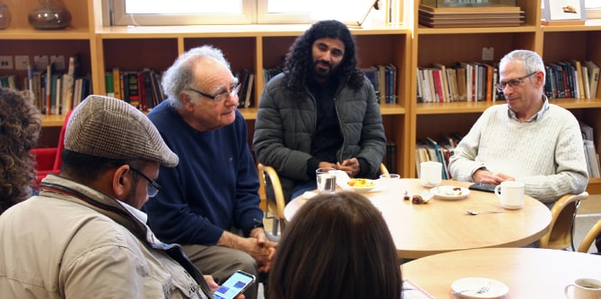

The second session of this year's Negev Lab series, which is exploring the theme of shade and desert, began with small group discussions in which participants explored the question of what constitutes Negev culture. This provided a basis for thinking more deeply about the challenges of developing local leadership in the fields of arts and culture, in order to improve the quality of life in the Negev.
The forum then came together for a learning session with the sculptor
Micha Ullman, 2018–2019 Israel Prize laureate, who spoke about the elements of reflection and shade in sculpture and in art, focusing on the physical characteristics of shade and their use as images for internal human expression. Referring to photographs of his works that are on display in Israel and around the world, Ullman explained the unique language of his art, which includes installations and “pits” reflecting historical and cultural complexities. He also presented his spiritual-cultural philosophy, which sees shade as a bridge that connects humans with their environment and merges the two.

Following the lecture, the small discussion groups reconvened and the participants examined the meanings that are reflected in art that is rooted in the desert. Ullman understands shade as allowing us to see things via their reflection. This assertion inspired open dialogue about Negev identity and desert culture.
Led by visiting faculty member
Dr. Ruth Calderon and
Dr. Adi Nir Sagi, director of the Mandel Center for Leadership in the Negev, the Negev Lab is a forum that brings together leaders from the Negev region to learn and gain inspiration on issues relating to local arts and culture. The event was attended by leading Negev figures in local government, academia, public institutions, and cultural organizations active in local arts in the Negev.
{kind=link}